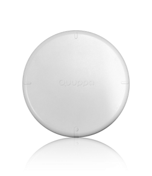
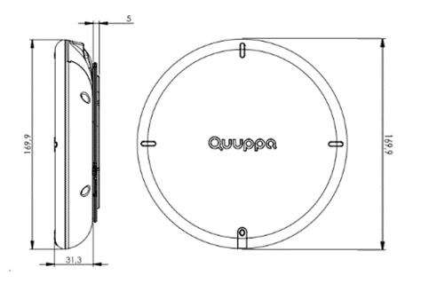
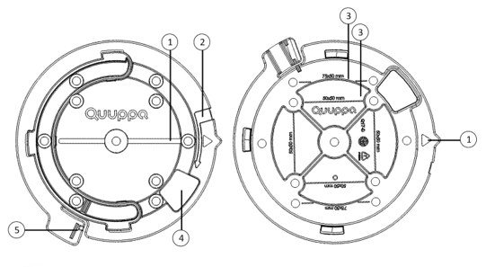

Q17 Locator Product Description

Overview
The Q17 Locator is the first Locator in Quuppa's Generation Q product line. The Q17 boasts a smaller, lighter design with a considerable increase in performance and a variety of other improved hardware components and firmware features. The Quuppa Q17 is designed for use in indoor environments, where the look matters. Also, the Q17’s future-proof design enables the adding of new features in the future.
The Q17 Locator works together with the Quuppa Locator Subscription. The Quuppa Locator Subscription is Locator-specific and must be valid to operate the Locator unit. The subscription model provides added flexibility to move Locators between projects as needed, even into existing projects that are currently using LD Generation Locators. In mixed projects all Locators must have either a valid subscription or license to enable the Quuppa Positioning Engine (QPE) to run.
This document provides an overview of the new features made available by the Q17 Locators. Quuppa reserves the right to make any changes to the features of the product at anytime.
We hope this new release will inspire and help you to Do More With Location.Hardware Upgrades
Design
The Q17 Locator is 30% smaller (170mm x 170mm x 31mm compared to the LD-6L Locator’s 202mm x 202mm x 40mm) and over a 100g lighter (390g compared to the LD-6L Locator’s 500g) than the LD Generation Locators. The new design enables superior efficiency in delivery as now 500 Locators can fit onto the same pallet.

Power Source
The Q17 Locator offers a standard micro-USB port (5V) for powering, in addition to the Power-over-Ethernet (PoE) powering option.
Plug & Play Ethernet
The Q17 offers a full-duplex, Power Class 1 (Very Low Power) 100 Mbit/s Ethernet for faster network connectivity with support for all cable types, enabling plug & play compatibility with all switches.
Mounting Brackets
The Q17 comes with an upgraded mounting bracket that is simpler and more effective to use. The new bracket has been designed based on received customer feedback. It enables faster installation, which can help cut down total installation times for larger projects.

Crypto Chip
A state of the art crypto chip has been included in the Q17 Locator for enhanced security. On top of the LD generation security features, the crypto chip enhances the security of the data traffic between the Locator and the QPE, enables authenticated firmware updates and allows the use of Locators in an isolation mode for deployments in high-security environments.
Connector Cover & Cable Management System
The upgraded industrial design includes a dust-resistant connection compartment with a built in cable management system. Quuppa recommends the use of the connector cover whenever possible to protect the connector area from dust and dirt.
Performance Upgrades
Locator Capacity
The Q17 Locator has a measured throughput (i.e. how much data it can process) of some 600+ Direction Finding packets per second. This is more than double that of it's predecessor, the LD-6L Locator, providing improved Locator performance. Please note that these values are theoretical throughput values, from measurements made in laboratory conditions. A variety of factors affect the throughput levels that can be reached in actual deployment environments.
Memory and Processing Power
Compared to its predecessor (the LD-6L Locator), the Q17 Locator offers significant improvements to memory and processing power, enabling the Q17 to provide even better performance. For example:
-
8 x flash memory
-
4.5 x processing power
-
16 x RAM
Feature Upgrades
New Software v. 6.0 Features
The Q17 Locator operates with the Quuppa Software Release 6.0 or newer, which provides new and upgraded features for the Quuppa Positioning Engine (QPE) and the Quuppa Site Planner (QSP) such as:
-
Enhanced Smart Zoning Features in the QSP
-
Upgraded Air Interface Load features including a new Locator Sensitivity feature
For more information about these and the other new software features, see the Quuppa Software Release 6.0 Description in the Quuppa Customer Portal.
Cross-Project Flexibility
The Q17 Locator works with the Quuppa Locator Subscription, which provides more flexibility to move Locators between projects. The subscription is Locator-specific, so Q17 Locators can easily be moved from one project to another whenever needed. The Q17 Locator can also be used in the same projects as LD Generation Locators LD-6L and LD-7L, so they can be added to existing projects if needed. In such mixed projects, it is important to remember that Q17 Locators will need a valid subscription and LD Generation Locators will need to be associated with a valid license to enable the QPE to run.
Offline module
The Q17 Locator supports the Quuppa Offline Module, which is developed for cases where for security reasons the system needs to be kept completely offline. Unlike with previous Locator models, the Q17 can be set up completely without network connection as the project files do not need to be submitted to the Quuppa Customer Portal and the files related to renewed subscriptions can be transferred to the QPE computer e.g. with a thumb drive. In the total offline mode, only the Locator ID numbers are visible in the Quuppa Customer Portal.